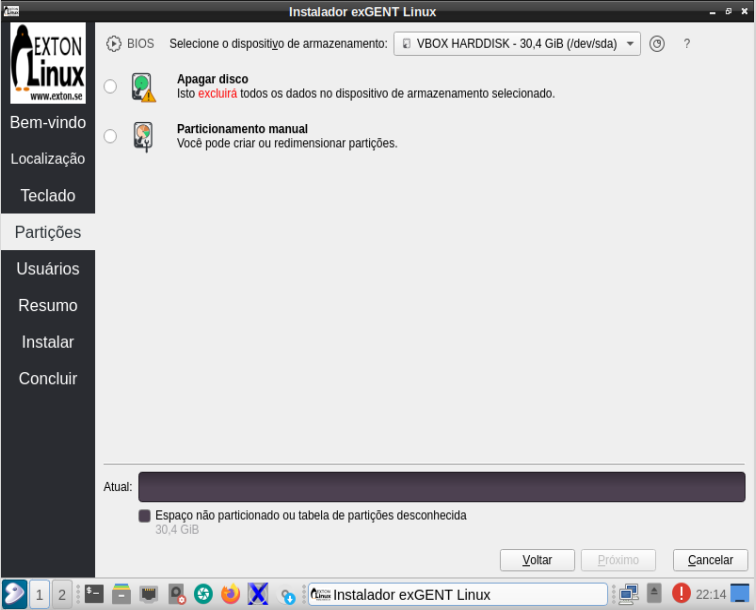

O sistema operacional (SO) Exgent é uma distribuição com kernel linux, desenvolvida a partir do SO Gentoo Linux. Distribuição rolling release, característica que torna a distro uma opção para quem precisa de um sistema robusto e confiável, além disso utiliza o ambiente gráfico LXQT, que é leve rápido e fácil de usar tornando o SO uma alternativa para aquele hardware que possui poucos recursos de memória ram e processador com baixo desempenho de processamento. Quer saber mais sobre o SO EXGENT? Ao final do tutorial vou relacionar links com maiores informações sobre o sistema. Antes de iniciar a instalação sugiro ler o material disponibilizado no site da distro link a baixo:
Vamos a instalação do exGENT 2021 LXQt Live DVD / USB.

1-Na tela de boot vemos algumas opções, como o que nos interessa nesse tutorial é a instalação do sistema, é só aperta Enter e vamos para a próxima tela.
2-Nesta segunda tela, depois de carregado o sistema no seu modo live vamos logar como super usuário escrevendo “root” no Username, tecle Enter, no Password a senha é “exGENT21$”.

3- A partir daqui você já pode ir analisando o sistema testar suas funcionalidades. Como essa não é nossa intenção no momento voltemos a instalação, clicando no ícone install system damos início ao processo. (destacar ícone de instalação na imagem3)

4- Iniciando o processo de instalação vamos trocar o idioma para português (Brasil).

5- Com o idioma português (Brasil) selecionado clicamos em próximo para prosseguimos a instalação.

6- Agora devemos trocar a localidade, mantemos América em região e no campo Área vamos substituir New York por São Paulo, clicamos em próximo, como indicado na imagem seguinte.


7- Nesse pondo da instalação vamos escolher o teclado que vamos usar, como recomendação, sugiro usar Portuguese (Brasil) e Default. Caso queria pode testar o teclado, escreva no campo indicado e teste as opções.
8- Chegou o ponto mais importante da nossa instalação a partir desse momento devemos escolher o disco e definir as partições de instalação. Para a instalação do sistema temos duas opções: I. Apagar disco inteiro (como o próprio nome diz essa opção exclui os dados disco de armazenamento criando as partições para instalação de forma automática); II. Particionamento manual.Utilizaremos a opção Particionamento manual, pois ela possibilita particionarmos o disco de acordo com nossa necessidade.

9- Agora podemos ver que existe um “Espaço não particionado...”, vamos clicar em “Nova tabela de partições”, a baixo note que a um campo “instalar gerenciador de inicialização em: …” usaremos Master Boot Record (MBR) para esta instalação. Feito isso vai liberar a opção próximo, clicamos e damos prosseguimento a instalação.

10- Como vamos utilizar MBR para essa instalação é só clicar em ok.

11- Podemos notar agora que onde aparecia “Espaço não particionado…” está indicando Espaço livre de 30,4 GiB, e logo a baixo temos: Nome Sistema de arquivos Ponto de montagem Tamanho Espaço livre desconhecido 30,4 GiB Clicado no Espaço livre da tabela libera a opção criar, clicamos nela e criaremos nossa primeira partição.

12- Essas e nossa janela para configurarmos a partição vamos ver as configurações na próxima imagem.

13- Nossa primeira partição tera Tamanho de 10000 MiB onde ficaram os diretórios e arquivos do nosso SO, será do Tipo da partição “Primária” o Sistema de Arquivos escolhido será o ext4 e em “Ponto de Montagem”, escolheremos a opção “ / ” e clicamos “ok”, pronto partição criada.

14- Note que agora existe uma Nova partição em nosso disco, confira as mudanças conforme de mostrado na tabela abaixo: Nome Sistema de arquivos Ponto de montagem Tamanho Nova partição ext4 / 9,8 GiB Espaço livre desconhecido 20,6 GiB Agora vamos criar a partição onde irão ficar os diretórios e arquivos de usuário, clicando no Espaço livre que agora tem 20,6 GiB em seguida clicamos em criar.

15- Como vamos utilizar todo Espaço livre nessa partição, não vamos alterar o tamanho de 21093 MiB mantemos também o Tipo da partição, “Primária” e Sistema de Arquivos “ext4”, em Ponto de Montagem escolheremo a opção “/home”, observe figura a baixo.
16- Clicamos ok e partição criada.
17- Podemos ver acima a configuração das partições criadas, uma partição de 9,8 GiB onde estarão os arquivos e diretórios do SO e uma partição de 20,6 GiB local dos diretórios e arquivos dos usuários do sistema.

18- Como vamos fazer uma instalação do tipo MBR é só clicar ok e passamos para próximo passo.
18- Como vamos fazer uma instalação do tipo MBR é só clicar ok e passamos para próximo passo.


19- Nessa parte da instalação é só escolher um nome e uma senha e clicar próximo.

20- Nesta tela podemos revisar todas configurações realizadas durante o processo de instalação, podemos também fazer correções caso percebermos algum erro, voltando passos e reconfigurando, como está tudo ok clicamos em “instalar”.

21- Marcamos Reiniciar agora e Concluído, assim reiniciamos o pc para usar o sistema agora instalado.
Em nosso próximo artigo vamos realizar ajustes de pós-intalação e fazermos algumas análises quanto ao desempenho e recursos utilizados pelo exgent.